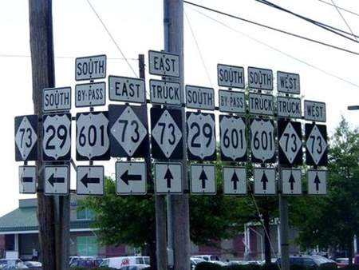
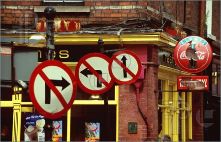

Writing maintainable
code
- ID - David Hernández
- Role - Dev Manager
- Works for - iO1
- mail - davidhernandezruiz@gmail.com
- Name - David Hernández
- Job role - Dev Manager
- Company - iO1
- E-mail - davidhernandezruiz@gmail.com
Single Responsibility Principle
SRP
- A function does one thing
- An object has an objective
Don't repeat yourself
DRY
Keep it simple, [stupid]
KISS
Better names
+ Simpler functions


If there is a comment in a function
the function can be simplified
If there is a comment above a variable
The variable name can be improved
Code evolves

Comments don't
If there are a lot of comments...
- Camel case VS Hungarian Notation
- Tabs VS Spaces
- Windows VS Linux
- Use the standards
- Agreements with the team
- Take decissions
"Always leave the campground better than you find it"
- Boy scout rule
Metrics as a guide,
not as a rule
Recommended readings
License of the CC by-nc
Check the source code for the script!